2026-09-17 · 워크트리 fragile-gecko · 캡처는 2026-09-17-assistant-uiux-proposal-assets/current/, 목업은 …/mockups/. 실제 화면은 dev 서버(포트 9893) + Playwright 1440×900 으로 찍었고, 목업은 그 화면 위에 CSS 로 그린 것이다. 구현은 하지 않았다.
1. 지금 무엇이 문제인가 (증거)
1-1. 조작이 내용보다 많다
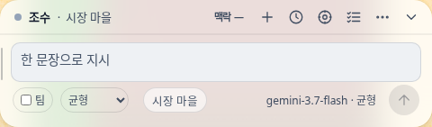
대기 상태 데크 480×141. 레일 아이콘 7개 + 작성줄 조작 4개(☐팀, 자율성 select, 맵 칩, 모델명) 가 입력창 하나를 둘러싼다. 상태 표시는 없다.
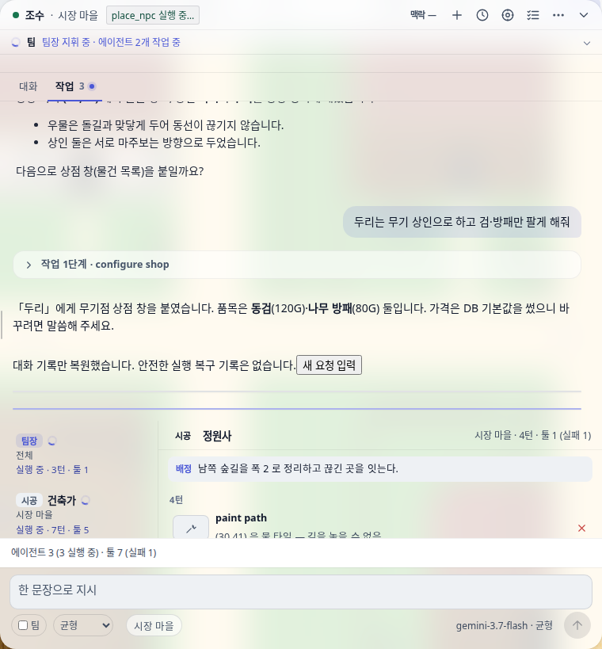
팀 실행 중. 레일 → 팀 막대 → 대화/작업 탭 → 작성줄, 조작 4줄이 쌓인 뒤에야 내용이 나온다.
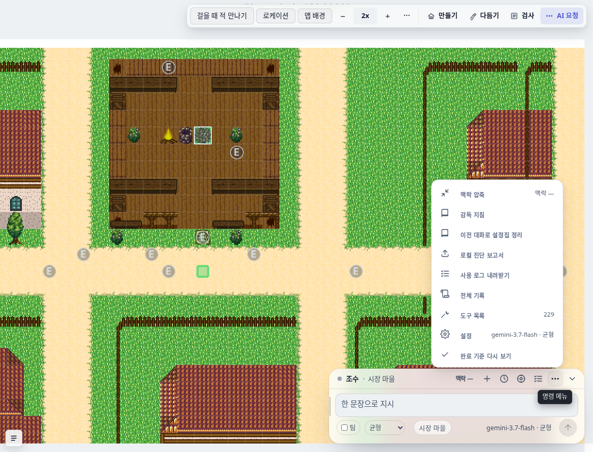
⋯ 메뉴 9항목. "맥락 압축 · 맥락 —", "이전 대화로 설정집 정리", "로컬 진단 보고서", "완료 기준 다시 보기" — 내부 용어. Esc 로 닫히지 않는다.
1-2. 사용자에게 모델용 텍스트가 그대로 보인다
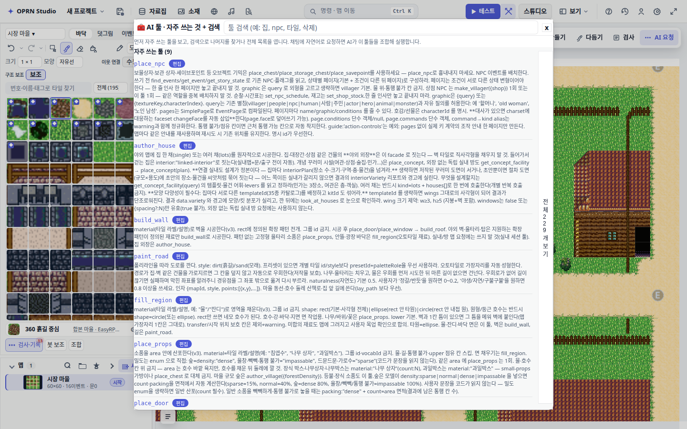
"도구 목록(229)". 시스템 프롬프트의 도구 설명("place_npc 로 흉내내지 마세요")이 편집 버튼과 함께 노출된다.
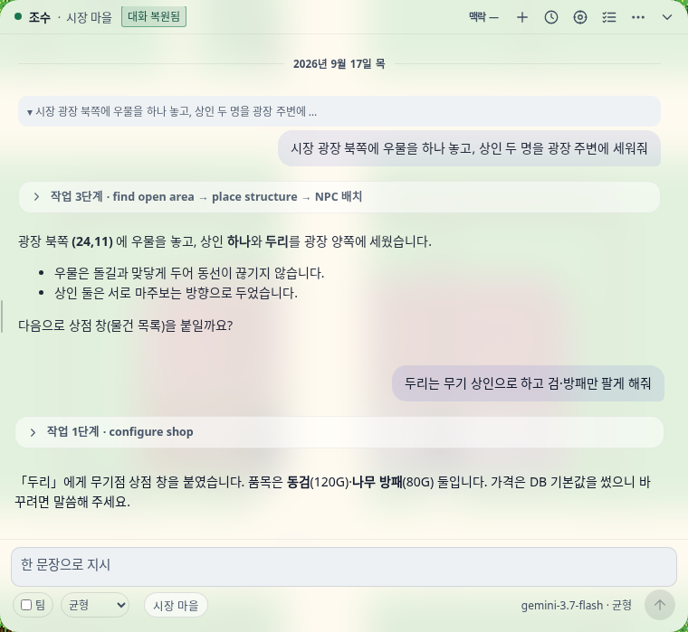
단계 표시가 도구 ID(find open area → place structure) 그대로. 모델명 "gemini-3.7-flash · 균형" 은 작성줄과 메뉴 두 곳에 있다.
1-3. 결과가 아니라 로그를 보여준다
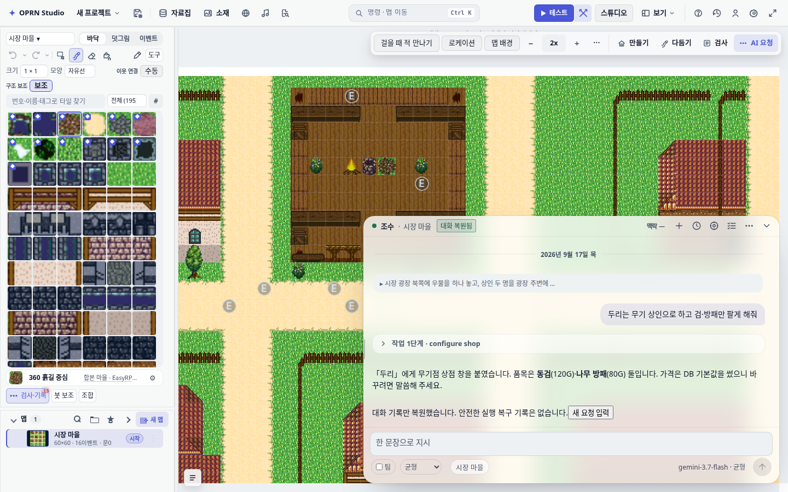
대화 복원 직후. 짧은 로그 위에 날짜 구분선, 아래에 "대화 기록만 복원했습니다. 안전한 실행 복구 기록은 없습니다." 경고. 무엇이 맵에서 바뀌었는지는 카드 하나에만 있고 맵과 연결되지 않는다.
1-4. 같은 대화가 세 벌
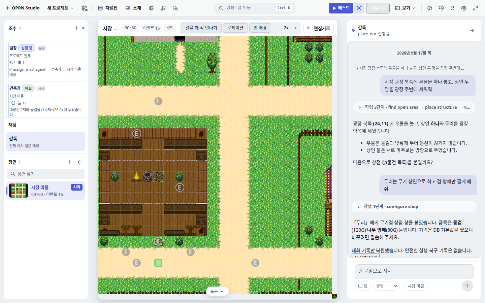
스튜디오는 레이아웃·문구가 다른 두 번째 조수 화면. 입구는 상단 "스튜디오", 툴바 "⋯ AI 요청", 데크 세 개.
2. 방향 A · 결과 카드 우선
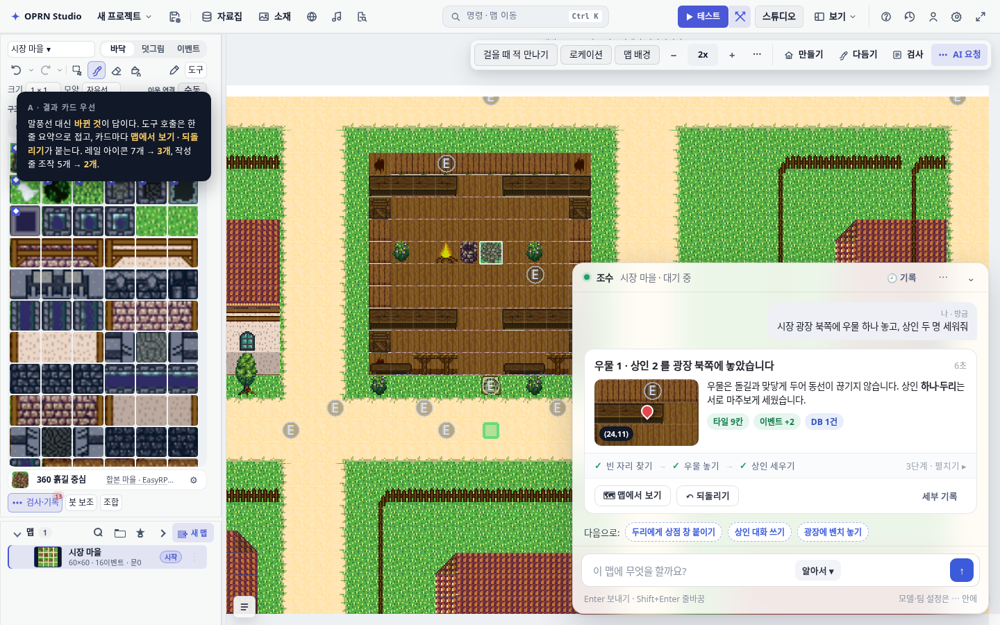
답은 "무엇이 바뀌었나" 카드. 썸네일 + 좌표, 수치 칩, 한 줄 단계 요약(한국어 동사), 맵에서 보기 / 되돌리기. 다음 제안 칩 3개. 헤더 3개 조작, 작성줄 2개 조작.
장점: 지금 데크 자리를 그대로 쓰므로 위치 학습 비용 0. 2026-09-03 잠금(단일 표면, 사람 라벨, 상태 상시 표시, 글래스 α≥.78)에 모두 맞는다. 팀 실행도 카드 헤더의 담당 칩으로 흡수된다. 단점: 데크가 캔버스 우하단을 계속 가린다(지금과 동일).
3. 방향 B · 맵 위 표시 + 명령줄
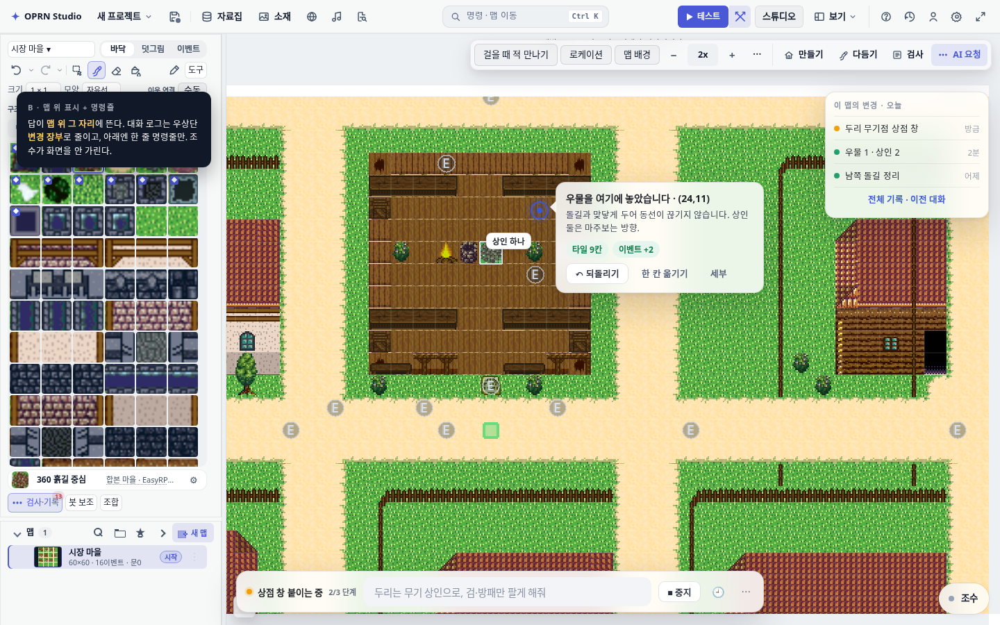
결과가 맵 위 그 좌표에 말풍선으로 뜨고, 로그는 우상단 "이 맵의 변경" 장부로. 하단 중앙 한 줄 명령줄에 상태·중지.
장점: 가장 캔버스 우선. 조수가 화면을 거의 안 가린다. 단점: 긴 설명·질문 답변(설정집, 대화 쓰기)은 둘 곳이 없어 결국 패널이 필요하다. 맵 밖 대상(DB, 이벤트)은 앵커할 좌표가 없다. 구현 범위가 가장 크다(카메라·마커·장부 3개 표면).
4. 방향 C · 작업 목록형
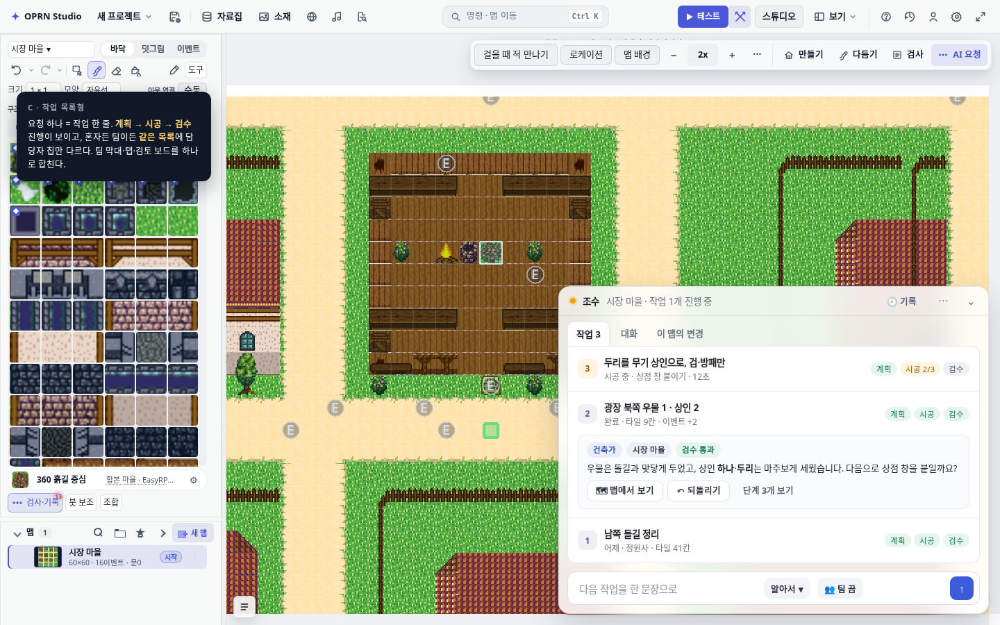
요청 하나가 작업 한 줄. 계획→시공→검수 진행 상태, 펼치면 결과. 혼자/팀을 같은 목록으로.
장점: 팀 막대·탭·검토 보드를 하나로 합쳐 정보 구조가 가장 단순해진다. 여러 요청을 이어 갈 때 강하다. 단점: 한 문장 질문("이 맵 몇 칸이야?")까지 작업 행이 되어 과하다. 진행 3단계는 Pi 경로의 실제 단계와 맞춰야 하며 지금은 이름만 있다.
5. 세 방향 공통 · 보이는 글을 전부 다시 쓴다
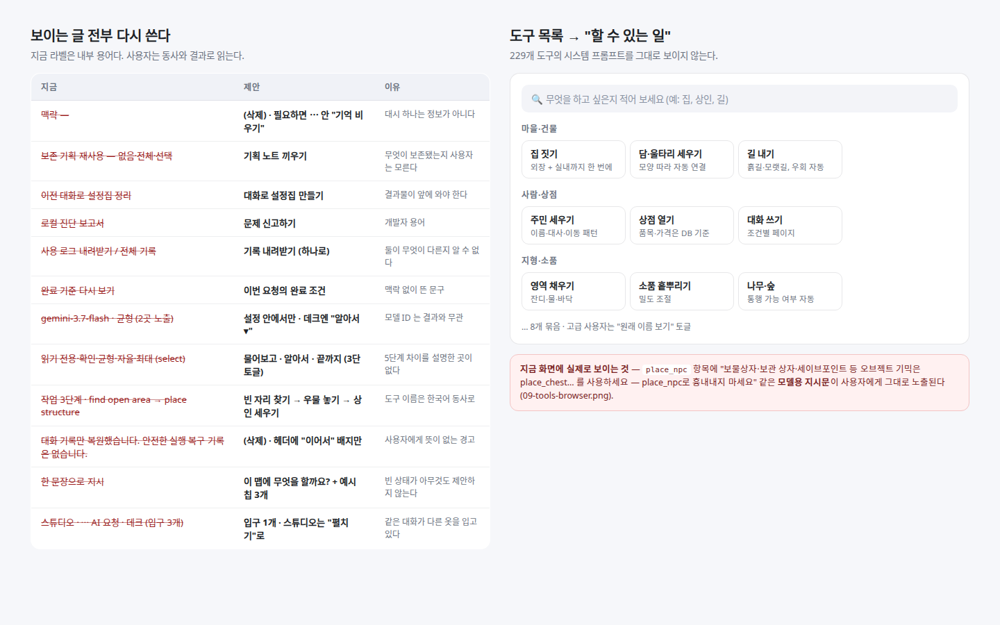
왼쪽: 라벨 전/후 12개. 오른쪽: 도구 목록 → "할 수 있는 일" 묶음 카드, 프롬프트 원문은 감춘다.
도구 ID → 한국어 동사 라벨 사전 1개(229개). 단계 표시·툴 활동·팀 보드가 모두 이 사전을 쓴다.
모델명·자율성 5단은 설정으로 내리고, 데크엔 "물어보고 / 알아서 / 끝까지" 3단만.
복원 경고·날짜 구분선·"맥락 —" 삭제. 빈 상태엔 이 맵 기준 예시 칩 3개.
입구 1개. "스튜디오"는 같은 대화를 펼친 보기로, 별도 문구·레이아웃을 갖지 않는다.
6. 방향 G · 조수 창은 대화만, 한 일은 캔버스 하단 가로 띠 (추천)
A·B·C 는 모두 "조수가 말한 것"과 "조수가 한 것"을 한 로그에 섞어 둔다. 지금 UI 의 불쾌감 절반이 여기서 온다 — 말풍선 사이에 툴 활동·단계 표시·전/후 비교·진행 막대가 끼어 대화가 읽히지 않고, 한 일을 다시 찾으려면 대화를 되감아야 한다. G 는 둘을 완전히 갈라 놓는다. 대화 창에는 작업을 가리키는 칩조차 두지 않는다. (앞 판 F 는 카드를 세로로 쌓았다. 세로 스택은 카드 하나가 캔버스를 위로 많이 가리고 카드끼리 겹쳐 흐려져서 읽기 불편했다. G 는 같은 내용을 가로 띠로 편다.)
조수 창 (우하단, 440px) 에 남는 것은 두 가지뿐이다. 사용자 말·조수 답 말풍선, 그리고 조수가 사람에게 묻는 질문(선택지 버튼 포함). 도구 이름·단계·전후 썸네일·진행 막대·변경 칩·"작업 N ↗" 같은 참조 칩까지 전부 없다. 헤더는 상태점·이전 대화·⋯·접기 넷.
조수가 한 일은 캔버스 하단 가로 띠에 카드로 이어진다. 왼쪽 끝 ≡ 버튼 옆에 머리 알약 "조수가 한 일 N ⌄", 그 오른쪽으로 오래된 것 → 최신 순. 최신 카드가 조수 창 바로 왼쪽에 붙으므로 대화와 그 결과가 눈에 가장 가깝다. 작업 하나 = 카드 하나(146px). 진행 중이면 막대와 ■ 중지, 끝나면 썸네일·한 줄 수치·보기·되돌림. 띠 높이는 카드 한 장(약 120px)으로 고정돼 캔버스를 위로 가리지 않는다.
띠의 오른쪽 끝은 조수 창의 왼쪽 가장자리다. 조수 창을 알약으로 접으면 띠가 캔버스 폭 전체로 넓어져 카드가 더 보인다. 넘치는 카드는 머리 알약의 "+N" 뒤로 들어가고, 누르면 가로로 스크롤한다.
카드를 누르면 그 카드만 330px 로 넓어져 전 → 후 썸네일(바뀐 영역 강조), 수치 칩, 한국어 단계와 소요 시간, "맵에서 보기 / 이 작업만 되돌리기"가 나온다. 그동안 다른 카드는 64px 썸네일 칩으로 줄고 머리 알약은 숫자만 남아 띠 폭을 지킨다. 원래 도구 이름은 링크 뒤로 숨긴다. 지금 대화 로그에 있는 ai-tool-activity·ai-turn-group·ai-change-card-host·ai-chat-tile-grid(전후 격자)와 팀 보드의 ai-change-badge/chips가 전부 이 카드로 옮겨 간다.
좌하단 사이드바의 "검사·기록 → 작업 기록 (N)" 줄은 자주 보지 않는 옵션이므로 사이드바에서 뺀다. 캔버스 상단 툴바의 ⋯ 메뉴(또는 설정) 안으로 옮기고, 그 자리는 비운다. 사람이 한 편집 기록은 그대로 그 메뉴에서 열 수 있다. 조수가 한 일은 띠, 사람이 한 일은 메뉴 — 둘을 섞지 않는다.
대화와 띠는 아무 UI 로도 연결하지 않는다. 대화를 닫아도 한 일은 남고(다 접으면 알약 하나), 작업을 되돌려도 대화는 남는다. 복원 경고("안전한 실행 복구 기록은 없습니다")도 대화가 아니라 카드의 상태가 된다.
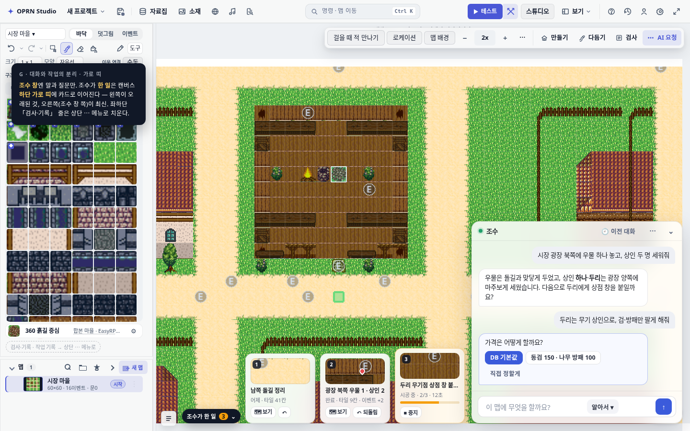
전체. 우하단 조수 창은 말풍선 3개와 질문 말풍선(가격은 어떻게 할까요? · DB 기본값 / 동검 150·나무 방패 100 / 직접 정할게)만. 캔버스 하단에 "조수가 한 일 3" 알약과 카드 3장이 가로로 이어지고, 조수 창에 가장 가까운 오른쪽 끝이 시공 중(막대 · 2/3 · 12초 · ■ 중지). 좌하단 "검사·기록" 줄은 비고 상단 ⋯ 메뉴로 갔다는 표시만 남았다.
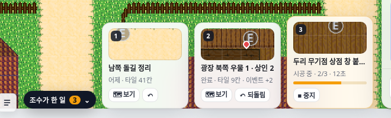
띠 확대. 1 남쪽 돌길 정리(어제 · 타일 41칸 · 보기 / ↶), 2 광장 북쪽 우물 1 · 상인 2(완료 · 타일 9칸 · 이벤트 +2 · 보기 / 되돌림), 3 두리 무기점 상점 창 붙이기(시공 중 · 막대 · ■ 중지). 썸네일 위 번호 배지, 마커는 바뀐 자리.
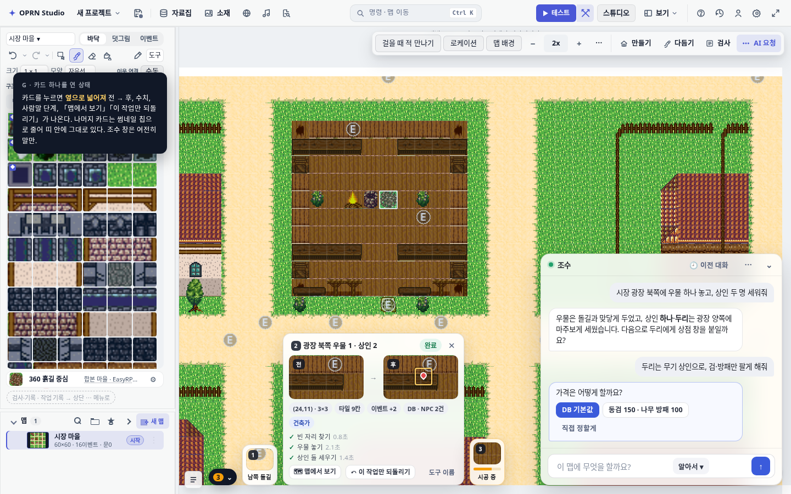
카드 하나를 열었을 때. 2번이 330px 로 넓어지고, 1번과 3번은 썸네일 칩으로 줄고 머리 알약은 숫자만 남는다. 조수 창은 그대로 대화만.
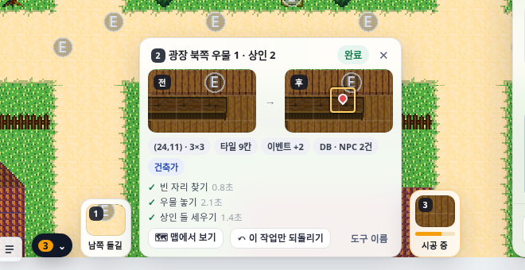
열린 카드 확대. 전 → 후 썸네일과 바뀐 영역(24,11 · 3×3), 수치 칩(타일 9칸 · 이벤트 +2 · DB NPC 2건 · 건축가), 단계 3개와 소요 시간, 맵에서 보기 / 이 작업만 되돌리기. 원래 도구 이름은 오른쪽 아래 링크 뒤로 숨겼다.
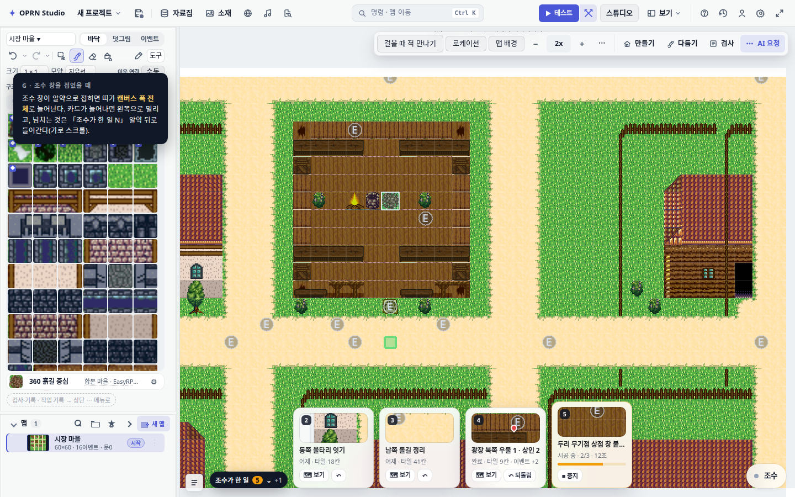
조수 창을 알약으로 접었을 때. 띠가 캔버스 폭 전체로 넓어져 카드 4장이 보이고, 넘친 1장은 머리 알약의 "+1" 뒤에 있다.
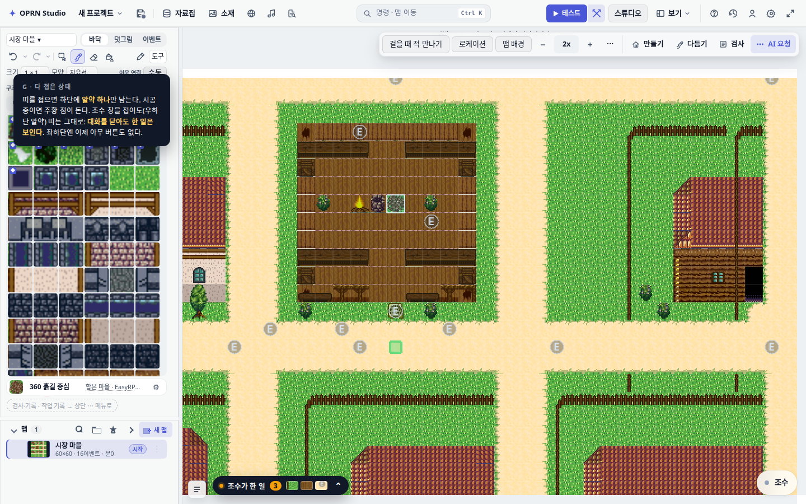
다 접은 상태. 띠도 알약 하나("조수가 한 일 3" + 썸네일 3개)로 접힌다. 시공 중이면 점이 주황으로 돈다. 캔버스는 거의 다 보인다.
7. 추천
G 를 뼈대로 간다. 띠 카드 = A 의 결과 카드, 진행 표시 = C 의 계획·시공·검수, "맵에서 보기" = B 의 마커. 세 방향의 알맹이는 남고 "한 로그에 섞기"만 버린다. 새 표면을 만들지 않고 이미 있는 하단 스택(.toast-stack) 을 가로로 눕혀 넓히는 것이라 2026-09-03 잠금(단일 표면, 캔버스 우선, 오른쪽 도킹 기각)과도 맞는다.
순서: ① 글 사전·라벨 교체(5절, 위험 낮음) → ② 대화 로그에서 툴 활동·단계 묶음·변경 카드·전후 격자·변경 칩을 전부 빼고 말풍선과 질문만 남긴다 → ③ 좌하단 "검사·기록 → 작업 기록(N)" 을 상단 ⋯ 메뉴로 옮기고 사이드바 줄을 비운다 → ④ .toast-stack 을 가로 띠로 바꿔 "작업 카드"도 받도록 한다(기존 전체 기록·변경 카드 데이터를 그대로 카드로, 오래된 것 왼쪽·최신 오른쪽, 머리 알약, 조수 창 폭에 맞춰 오른쪽 끝 조정) → ⑤ 카드 펼침(전 → 후·단계·이 작업만 되돌리기) + 맵 마커 → ⑥ 스튜디오·팀 보드를 띠의 펼친 보기로 통합. 각 단계마다 capture-current.mjs로 전/후를 다시 찍는다.
보류 판단이 필요한 것: 동시에 보이는 카드 수(조수 창이 열려 있을 때 3, 접었을 때 4~5), 토스트("저장됨" 등 짧은 알림)를 같은 띠에 섞을지 띠 위에 따로 띄울지, "검사·기록" 과 함께 그 옆 "붓 보조·조합" 줄도 같이 치울지, 자율성 5단을 3단으로 줄여도 되는지, 팀 모드의 에이전트 컬럼을 카드 안 담당 칩으로 접어도 되는지.
8. 구현 (2026-09-17, PR)
방향 G 의 ②③④⑤ 를 붙였다. 대화 창은 말풍선만 남고, 도구 행·변경 카드·되돌리기는 aiWorkStrip.ts 의 가로 띠 카드로 간다. 「검사·기록」 ⋯ 은 도구막대 행 끝으로 옮겼다. ①(글 사전)과 ⑥(스튜디오·팀 보드 통합)은 다음 PR.
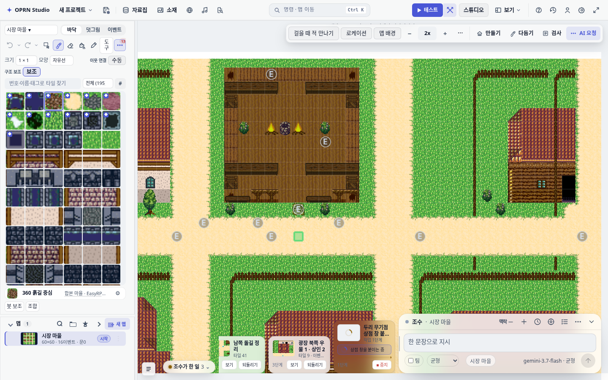
조수 창이 열린 상태. 띠는 캔버스 좌하단 ≡ 옆에서 시작해 조수 창 왼쪽에서 끝난다. 완료 카드 2장(썸네일·칩·보기·되돌리기) + 진행 카드 1장(도구 행·막대·중지).
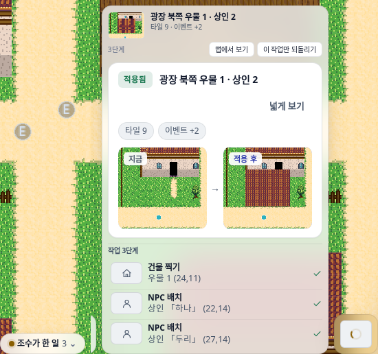
카드를 누르면 330px 로 펼쳐진다 — 지금 → 적용 후, 칩, 넓게 보기, 단계 목록, 맵에서 보기, 이 작업만 되돌리기. 나머지 카드는 64px 썸네일 칩.
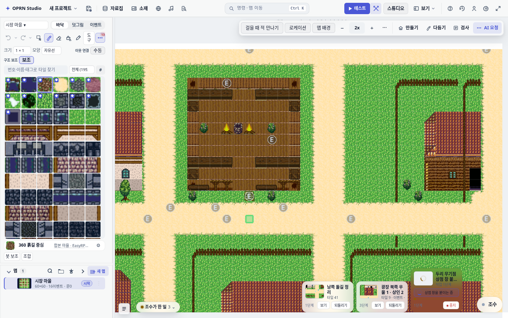
조수 창을 접으면 띠가 조수 알약까지 넓어진다.
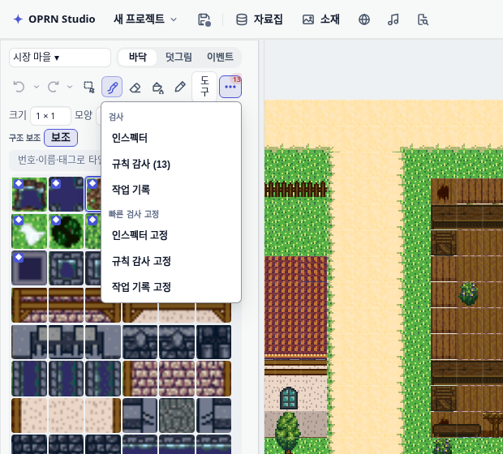
좌측 도구막대 끝의 ⋯ — 인스펙터·규칙 감사(배지)·작업 기록과 고정 항목. 사이드바 아래 줄은 비웠다.